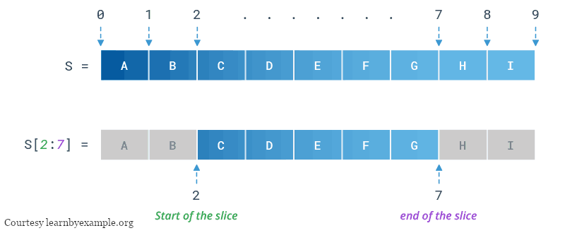

A slice is a section, or slice, of an iterable object.
The syntax for a slice is this:
>>> my_list = ['a', 'b', 'c', 'd']
>>> my_list[1:3]
['b', 'c']
The slice returns a new list, and does not modify the existing list.
The first number is where to start the slice. Empty means "the beginning".
The second number is where to end the slice. Empty means "the end".
Slice numbers point to borders between elements, not the elements themselves.
Border illustration:

A third position exists, showing the step size:
>>> my_list = ['a', 'b', 'c', 'd']
>>> my_list[::2]
['a', 'c']
>>> my_list[::-1]
['d', 'c', 'b', 'a']
Because slices return a new list, they can be used to copy the whole list:
>>> my_list = ['a', 'b', 'c', 'd']
>>> new_list = my_list[:]
>>> new_list[0] = 'e'
>>> new_list
['e', 'b', 'c', 'd']
>>> my_list
['a', 'b', 'c', 'd']